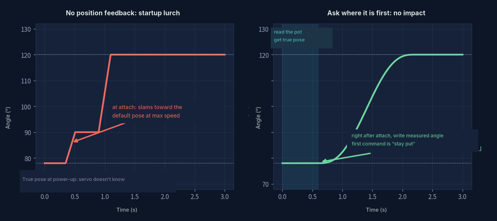
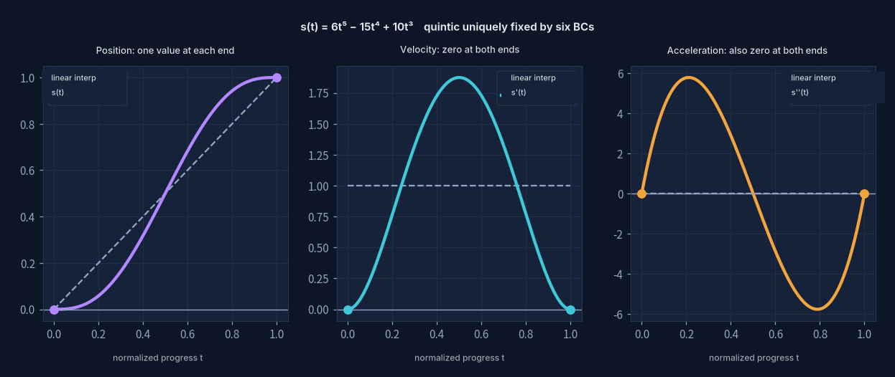
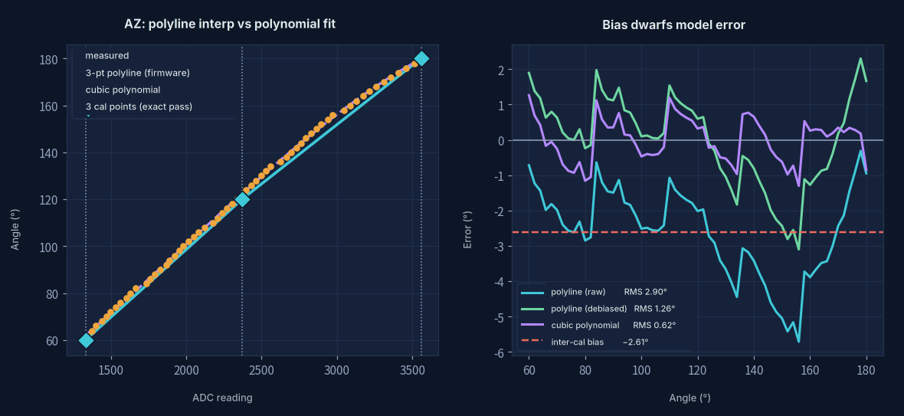

That first twitch
Servo Homing & S-Curve Motion
This isn't really a page about tracking the sun. It's about two specific problems:
stopping the servo from lurching at power-on, and
getting it to move smoothly once it does.

Problem one · the power-on lurch
Plug it in and the mount jerks. The reason isn't complicated: a servo is open loop —
it doesn't know where it currently is — but the instant your code calls
attach(), the library starts putting out a pulse width and the servo drives
at full speed toward whatever angle that corresponds to. Whether it started
at 78° or at 170° is not something it cares about. It just goes.
That jerk is unkind to plastic gears, to the frame, and to whatever panel is bolted on top. Worse, the direction changes every time, because it depends on where the thing happened to stop when you last cut power.
I tried the obvious workarounds first: make the first command land near home, add a delay after boot, step across in small increments. All of them are really just guessing the starting point — guess right and it's smooth, guess wrong and it lurches anyway.

The fix: ask it where it is
That feedback potentiometer inside the servo has known the true shaft angle the whole time. Nobody had asked it. Bring the center tap out to an ADC (opening it up, soldering, and calibrating is the previous page) and the startup sequence can become this — and the order is everything:
// ① Read BEFORE attach. The servo isn't driven yet, the shaft is free,
// so the potentiometer reads exactly where it came to rest last time.
int rawAZ = readAverage(POT_AZ, 40);
float azStart = constrain(azRawToDeg(rawAZ), AZ_MIN, AZ_MAX);
// ② Attach, then immediately write that measured angle.
// The first command the servo ever receives is "stay where you are" — so it doesn't move.
svAZ.attach(PIN_AZ, US_MIN, US_MAX);
svAZ.write((int)roundf(azStart));
azCmd = azStart;
// ③ Now that the starting point is known, "move smoothly" finally means something.
smoothMoveTo(AZ_HOME, EL_HOME, 1600);This is what homing actually is. Everything I tried before was just guessing the starting point.
Worth saying plainly: after all the taking apart, soldering and calibrating, the biggest payoff wasn't knowing the angle. It was those three lines being in that order. Once the true starting point is known, the word "smooth" finally has something to refer to.
Problem two · what counts as smooth
Start at 78°, target 120°. How should it spend the 1.6 seconds in between?
The obvious answer is linear interpolation — same angular step every 20 ms. But that puts a discontinuity at each end: velocity jumps from zero to some value, then drops back to zero on arrival. Acceleration is infinite at both instants, which you feel as a snap at the start and a thud at the finish.
So what's wanted is a curve where the endpoints are right, the velocity is zero at both ends, and the acceleration is zero at both ends too. Six requirements.
Six conditions, six coefficients
Six conditions pin down a fifth-degree polynomial exactly. Write s(t) = a0 + a1t + … + a5t5 and turn the requirements into equations:
s(0) = a₀ = 0 → a₀ = 0
s'(0) = a₁ = 0 → a₁ = 0
s''(0)= 2a₂ = 0 → a₂ = 0
Three at the end (t = 1). The first three are already gone, leaving a₃ a₄ a₅:
s(1) = a₃ + a₄ + a₅ = 1
s'(1) = 3a₃ + 4a₄ + 5a₅ = 0
s''(1)= 6a₃ +12a₄ +20a₅ = 0
What's left is a 3×3 linear system. Whether it has a unique solution comes down to the determinant:
| 3 4 5 | = 2 ≠ 0 → three planes meeting at one point: unique solution
| 6 12 20 |
Eliminate and you get a3 = 10, a4 = −15, a5 = 6, so
Those three numbers — 6, −15, 10 — aren't tuned and aren't fitted.
They're the one answer those six conditions allow.
If you want a different kind of smoothness you have to change the conditions;
you can't just nudge the coefficients.
Determinants and elimination in full → Vectors & Space

Left to right, those three plots are the six conditions: position takes a value at each
end, velocity is zero at both ends, acceleration is zero at both ends. The bell shape in the
middle is the velocity — slow start, quick middle, gentle finish, which is exactly how you'd
open a valve by hand.
What derivatives and second derivatives mean → Change & Gradients
float sCurve(float t) { return t * t * t * (t * (t * 6.f - 15.f) + 10.f); }
void smoothMoveTo(float azTgt, float elTgt, int ms) {
float a0 = azCmd, e0 = elCmd; // start point: measured, not guessed
int steps = ms / 20;
for (int i = 0; i <= steps; i++) {
float s = sCurve((float)i / steps);
azCmd = a0 + (azTgt - a0) * s;
elCmd = e0 + (elTgt - e0) * s;
applyServos();
samplePosition(); // log whether it's actually keeping up
delay(20);
}
}Writing it as t*t*t*(t*(t*6-15)+10) is Horner's method — two multiplications
instead of a fifth power. Inside a loop that runs every 20 ms, that's worth doing.
Interpolation and fitting, on one page
This page solves for coefficients twice. The two look alike and are not the same thing.

| S-curve | Potentiometer calibration | |
|---|---|---|
| Given | 6 boundary conditions | 61 measured points |
| Unknown | 6 coefficients | 3 coefficients |
| System | exactly determined | overdetermined |
| Method | interpolation: satisfy every condition exactly | fitting: minimise total error |
| Result | unique solution | least-squares solution |
The calibration in the firmware uses a three-point piecewise line — pick 60°, 120° and 180°, interpolate linearly across the two halves. That's interpolation too: it passes exactly through those three points (the diamonds on the left plot), and pays for it by faking everything in between with straight lines. I chose it because extrapolating from just two endpoints was off by 4° in the middle, and one extra point in the centre fixed that.
Going back and checking it against all 61 sweep points gives this:
| Method | AZ RMS | Note |
|---|---|---|
| Three-point piecewise (as-is) | 2.90° | includes a −2.61° systematic offset |
| Three-point piecewise (offset removed) | 1.26° | error from the shape itself |
| 3rd-order polynomial fit | 0.62° | shape error halved |
So switching to a polynomial really would halve the shape error. But the thing that jumps out of the right-hand plot is the red dashed line: the two calibrations are 2.61° apart overall — bigger than any modelling error. The three-point calibration was done on 2026-08-24, the sweep was a separate session, and in between things got taken apart and the supply changed. One teardown and reassembly wipes out everything a better model would have won.
The previous page ended with mechanical backlash at 2.07° dwarfing a 0.62° fit residual.
This page adds another: calibration drift at 2.61°, dwarfing it just the same.
What limits the accuracy is never the maths. It's the physical thing.
Which puts "replace the piecewise line with a polynomial" below "recalibrate" and
"kill the backlash" on the list. Knowing which one to fix first is worth more than knowing how to fix it.
Least squares in full → Fitting & Least Squares
What's in the build
A two-axis pan-tilt mount: two MG90S servos, four LDRs for quadrant differencing, an SSD1306 for status, all on an ACEBOTT ESP32 Max V1.0.
| Function | Pin | Note |
|---|---|---|
| AZ / EL servo signal | GPIO 5 / 16 | 500–2400 µs |
| AZ / EL potentiometer tap | GPIO 32 / 33 | ADC1 |
| LDR LU / RU / LD / RD | GPIO 36 / 39 / 34 / 35 | input-only pins, perfect for sensors |
| OLED | GPIO 21 / 22 | I²C |
That pin assignment was forced, not chosen. Early on, with only four LDRs, they sat comfortably on 32/33/34/35. Adding position feedback needed two more ADC channels, and with ADC2 unusable once WiFi is on, everything has to live on ADC1 — which is only GPIO 32–39. So 32/33 went to the potentiometer taps (those pins can do input or output, so they're the flexible ones) and the LDRs moved to 36/39, which are input-only and can't be used for much else anyway. Nothing wasted.
The three numbers I end up watching most are on the display:
AZ 120.0>118.3 -1.7
cmd actual error ← steady-state error: deadband plus gear slopHaving that middle column is the first time I could see the gap between what I asked for and what happened. Before that, where the mount was pointing was a matter of squinting at it.
Files
- Tracker firmware v4
tracker_v4.ino - LDR test sketch
ldr_test.ino - Back to: Servo Calibration
Where the numbers came from
Friendship code, please
请输入友情码
Hint: who said the line on the front page? His surname will do.
线索：首页那句话是谁说的？填他的姓。
Not quite — try again